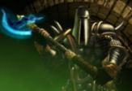

Forums galactiques > Assemblée Galactique : diplomatie officielle > Greg, un tricheur ?
Obiwan Kénobi 12/06 ETU 18:37 | Je me permets de dire que si tu (car apparemment monsieur ne fait pas la différence entre "jeu" et "réalité") es un adulte, tu ferais bien de faire un petit stage au CP pour éviter de faire autant de fautes. |
| D2BonZai  12/06 ETU 18:43 | seul le contenu est important. Vous persistez dans l'arrogance , mais tout le monde sait que c'est une facade , La t'es cassé c'est tout , pas besoin de t'enfoncé d'autant plus avec des posts inutiles au fond de toi tu sais que j'ai raison. Discution close ( C L O S E = (larrousse) synonyme "fermée" , "terminée" , "achevé" ... ) |
Drake12/06 ETU 18:51 | Dîtes-moi, ça vous ferait mal d'entrer pour une fois dans le rôle d'un empereur/commandant/dictateur/chef d'un empire galactique? |
AlphonseHubert 16/06 ETU 12:17 | Commandant BonZai, contrairement aux agissements douteux du commandant Greg et de ses prétendus amis, je n'ai fait que répondre aux cris de détresse d'un jeune commandant que vous opprimiez. Je lui ai rendu sa planète, et plus même, en échange d'un pied à terre dans son système. SI je ne lui étais pas venu en aide, c'est l'annihilation qui l'attendait. Alors, vous m'avez sous-estimé, vous m'avez insulté, moi, qui ne voulais que rétablir un certain équilibre permettant à obiwan de se développer. Vous avez eu le culot de me poser des ultimata. Je me suis défendu. Sachez que votre attitude fut la seule responsable de ce qui vous est arrivé, car le capitalisme porte en lui la guerre comme la nuée porte l'orage. AlphonseHubert |
Greg 16/06 ETU 15:48 | Cher alphonse hubert, il n'y a eu aucun agissement douteux ! Comment pouvez vous me mettre en accusation de la sorte alors que les accusateurs mêmes se sont dédits ! Cependant je suis bien d'accord avec vous que bonzai se comporte fort peu diplomatiquement à l'éégard de personnes sensibles. |
AlphonseHubert16/06 ETU 16:14 | Commandant Greg, BonZai a disparu. Il cherche à en entraîner d'autres dans sa chute, il n'y parviendra pas. Quant à vous, je persiste à trouver moyennement digne de récupérer l'Empire d'un commandant disparu, qu'il eût été votre ami ou non, pour vous emparer d'un système réservé au développement de jeunes commandants. Je tenais à signaler que ma situation est donc parfaitement différente de la vôtre, ce dont le commandant Obiwan pourra témoigner. Salutations, AlphonseHubert |
Obiwan Kénobi16/06 ETU 16:22 | Je ne peux mettre en cause les agissements de greg, qui figure parmi mes meilleurs alliés et je ne sais pas ce qu'il a fait ou pas (et d'ailleurs il ne m'appartient pas d'en juger). Je peux simplement confirmer la version que donne alphub des énèvenements dans mon système: j'ai fait appel à lui pour me défendre face à bonzai, qui avait entrepris de m'éliminer. |
Greg16/06 ETU 16:36 | Au moment où j'ai eu cette planète, je n'était qu'un tout petit commandant. |
Alcibiade 16/06 ETU 16:49 | Mais cela donne-t-il le droit d'éliminer de nombreux commandants très jeunes et innocents pour étendre un empire. Où est l'intérêt du peuple là-dedans ? Tout pour le peuple... |
Alcibiade16/06 ETU 16:49 | ou nous ne sommes que des sociaux-traîtres... |
Greg16/06 ETU 17:02 | Cher Alcibiade de Rémondie, commandeur de la CCCP, J'ai été très correct avec les commandants du système. Ce cher Salisian me proposait de détruire anarkia. Ce cher Anarkia me proposait de détruire Salisian. A l'époque je n'était qu'un tout petit commandnat, anarkia était plus fort et je décidais de suivre sa ligne. Nous nous sommes donc partagé Salisian, qui d'ailleurs a abdiqué avec une grande dignité, conscient que lui même voulait tuer anarkia. Puis, j'ai redistribué dans ce système à mesure que ma puissance s'étendait dans la galaxie. Puis, anarkia a attaqué sans sommation un petit commandant à qui j'avais redistribué une planète. J'ai donc demandé à anarkia de lui rendre, ou bien je serais obligé de prendre des mesures à son égard. Devant son absence de réponse après 1 jour ETU, j'ai décidé de mettre fin au règne d'anarkia, qu'on dit exilé dans d'autres systèmes, où je le laisserai en paix. J'ai déjà largement engagé un processus de redistribution intensif de planètes comme pourront en témoigne un grand nombre de commandants. Bien cordialement |
Obiwan Kénobi16/06 ETU 19:20 | Je confirme la version de greg, étant le petit commandant dont il est fait mention ici. |
Alcibiade16/06 ETU 19:44 | Encore Obiwan... tu as vraiment des problèmes pour te défendre décidement... ou alors tout le monde t'attaque pour te faire taire... |
Forums galactiques > Assemblée Galactique : diplomatie officielle > Greg, un tricheur ?